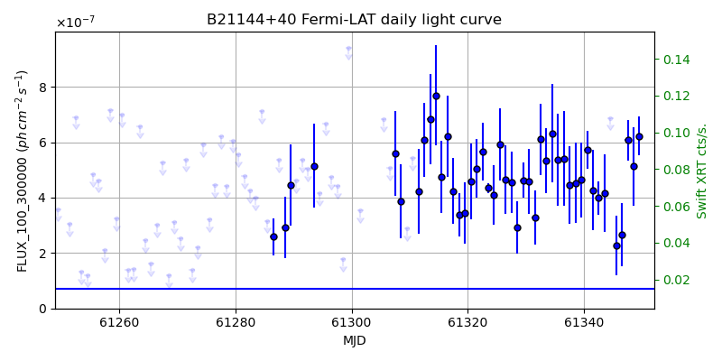
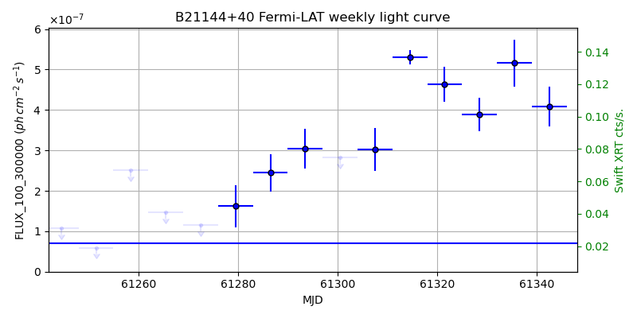
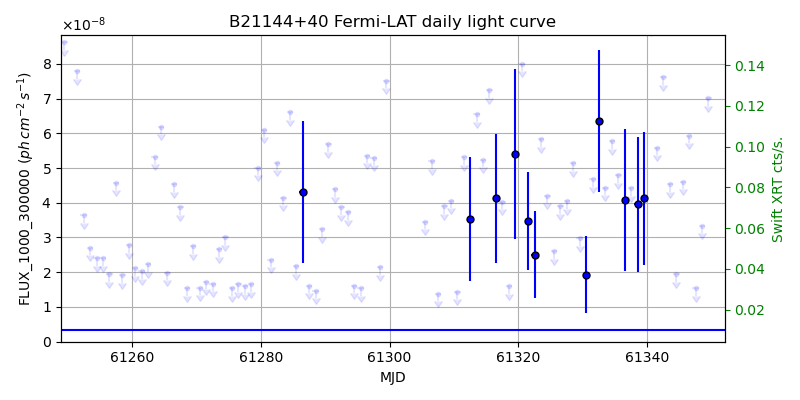
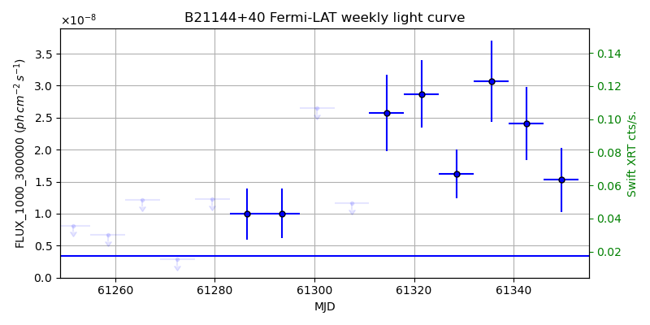

LAT Lightcurve site: https://fermi.gsfc.nasa.gov/ssc/data/access/lat/msl_lc/source/B2_1144p40
Swift site: https://www.swift.psu.edu/monitoring/source.php?source=B21144+40
NED: Query
Time of last update of this page: UT: 2026-11-13 16:23 (MJD: 61357.683)
| Property | Value |
|---|---|
| R.A. | 11:46:58.32 |
| Dec. | 39:58:33.6 |
| z | 1.088 |
| 3FGL SpectrumType | PowerLaw |
| 3FGL PL Index | 2.32 |
| 3FGL Flux_100_300000 | 7.00e-08 1 / (s cm2) |
| 3FGL Flux_1000_300000 | 3.34e-09 1 / (s cm2) |
| 3FGL Flux >200 GeV | 3.05e-12 1 / (s cm2) |
| 3FGL Extrap. Crab >200 GeV | 0.01 |
| 3FGL Flux After EBL Absorption >200GeV | 3.00e-14 1 / (s cm2) |
| 3FGL EBL Crab Fraction >200GeV | 0.00 |

| MJD | dMJD | Flux | dFlux | Frac3FGL | FracCrab>200GeV | EBLFracCrab>200GeV |
|---|---|---|---|---|---|---|
| 61348.50 | 0.50 | 5.13e-07 | 1.41e-07 | 7.33 | 0.09 | 0.00 |
| 61349.50 | 0.50 | 6.23e-07 | 7.10e-08 | 8.90 | 0.12 | 0.00 |
| 61350.50 | 0.50 | 5.66e-07 | 1.62e-07 | 8.10 | 0.10 | 0.00 |
| 61351.50 | 0.50 | 4.27e-07 | 1.26e-07 | 6.10 | 0.08 | 0.00 |
| 61352.50 | 0.50 | 7.71e-07 | 0.00e+00 | 0.00 | 0.00 | 0.00 |

| MJD | dMJD | Flux | dFlux | Frac3FGL | FracCrab>200GeV | EBLFracCrab>200GeV |
|---|---|---|---|---|---|---|
| 61321.50 | 3.50 | 4.63e-07 | 4.31e-08 | 6.62 | 0.09 | 0.00 |
| 61328.50 | 3.50 | 3.89e-07 | 4.13e-08 | 5.56 | 0.07 | 0.00 |
| 61335.50 | 3.50 | 5.16e-07 | 5.78e-08 | 7.38 | 0.10 | 0.00 |
| 61342.50 | 3.50 | 4.08e-07 | 4.96e-08 | 5.83 | 0.08 | 0.00 |
| 61349.50 | 3.50 | 4.71e-07 | 5.76e-08 | 6.74 | 0.09 | 0.00 |

| MJD | dMJD | Flux | dFlux | Frac3FGL | FracCrab>200GeV | EBLFracCrab>200GeV |
|---|---|---|---|---|---|---|
| 61348.50 | 0.50 | 3.34e-08 | 0.00e+00 | 0.00 | 0.00 | 0.00 |
| 61349.50 | 0.50 | 7.01e-08 | 0.00e+00 | 0.00 | 0.00 | 0.00 |
| 61350.50 | 0.50 | 3.35e-08 | 0.00e+00 | 0.00 | 0.00 | 0.00 |
| 61351.50 | 0.50 | 6.58e-08 | 0.00e+00 | 0.00 | 0.00 | 0.00 |
| 61352.50 | 0.50 | 2.06e-08 | 0.00e+00 | 0.00 | 0.00 | 0.00 |

| MJD | dMJD | Flux | dFlux | Frac3FGL | FracCrab>200GeV | EBLFracCrab>200GeV |
|---|---|---|---|---|---|---|
| 61321.50 | 3.50 | 2.87e-08 | 5.27e-09 | 8.61 | 0.11 | 0.00 |
| 61328.50 | 3.50 | 1.62e-08 | 3.75e-09 | 4.87 | 0.06 | 0.00 |
| 61335.50 | 3.50 | 3.07e-08 | 6.36e-09 | 9.21 | 0.12 | 0.00 |
| 61342.50 | 3.50 | 2.41e-08 | 5.71e-09 | 7.22 | 0.09 | 0.00 |
| 61349.50 | 3.50 | 1.53e-08 | 5.02e-09 | 4.59 | 0.06 | 0.00 |
--------------------------------------------------------- Using user-supplied coords: 11:46:58.32 39:58:33.6 2000 --------------------------------------------------------- FLWO UT night of: 2026-11-14 Local Sid. @ Midnight: 03:09 Sunset (-15.0) (local, UT): 18:35 01:35 Sunrise (-15.0) (local, UT): 05:42 12:42 Moonrise (local, UT): Moonset (local, UT): 20:50 03:50 Moon phase: 0.22 --------------------------------------------------------- AzTime LSID UT Obj_el Obj_az Mn_el Mn_az Sep. --------------------------------------------------------- 18:35 21:44 01:35 -12.9 336.0 20.1 218.2 120.2 19:05 22:14 02:05 -15.2 341.4 16.0 223.7 120.3 19:35 22:44 02:35 -17.0 347.2 11.6 228.6 120.4 20:05 23:14 03:05 -18.1 353.1 6.9 233.2 120.5 20:35 23:44 03:35 -18.5 359.2 2.0 237.3 120.6 21:05 00:14 04:05 -18.2 5.3 -2.2 241.2 120.8 21:35 00:44 04:35 -17.3 11.3 -9.0 244.8 120.9 22:05 01:14 05:05 -15.8 17.1 -14.6 248.2 121.1 22:35 01:44 05:35 -13.6 22.6 -20.4 251.4 121.2 23:05 02:14 06:05 -10.9 27.8 -26.2 254.5 121.4 23:35 02:44 06:35 -7.6 32.6 -32.1 257.5 121.6 00:05 03:14 07:05 -2.5 37.1 -38.1 260.6 121.8 00:35 03:45 07:35 0.5 41.3 -44.2 263.8 122.0 01:05 04:15 08:05 4.6 45.0 -50.2 267.1 122.2 01:35 04:45 08:35 9.2 48.5 -56.3 270.9 122.4 02:05 05:15 09:05 14.1 51.6 -62.4 275.3 122.7 02:35 05:45 09:35 19.2 54.4 -68.4 281.1 122.9 03:05 06:15 10:05 24.4 56.9 -74.2 289.9 123.1 03:35 06:45 10:35 29.9 59.1 -79.6 306.2 123.4 04:05 07:15 11:05 35.4 61.0 -83.2 343.5 123.6 04:35 07:45 11:35 41.0 62.6 -82.1 35.1 123.9 05:05 08:15 12:05 46.8 63.7 -77.4 61.2 124.2 05:35 08:45 12:35 52.5 64.4 -71.8 73.4 124.4 05:42 08:52 12:42 53.7 64.5 -70.5 75.2 124.5 --------------------------------------------------------- Dark hours >55 deg.: 0.00